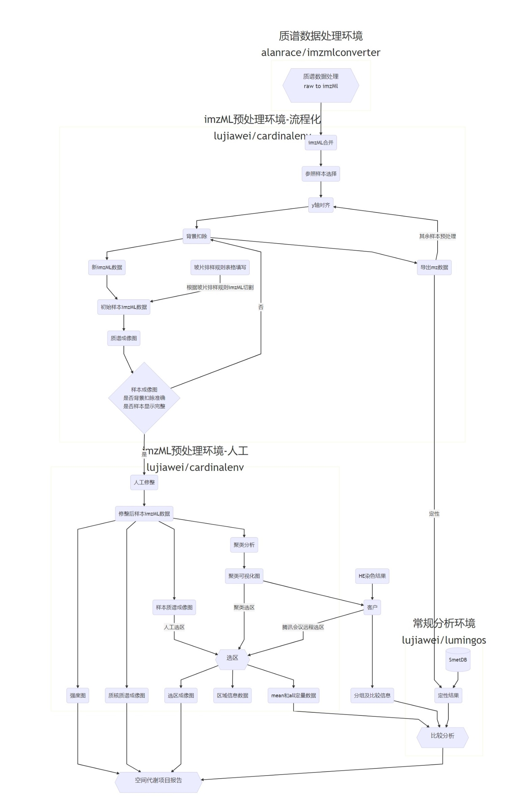

分析流程说明
质谱数据处理，将raw格式转化为imzML格式
imzML预处理
- 多imzML文件合并
- 参照样本选择(默认导入第一个imzML数据为参照样本，可选择)
- 参照样本y轴(保留时间)对齐处理(处理方式)
- 参照样本背景扣除
- 参照样本峰对齐，导出mz数据
- 其余样本y轴(保留时间)对齐处理
- 其余样本背景扣除
- 以mz数据对其余样本峰对齐
样本分割
- 玻片排样规则表格填写
- 根据排样规则对imzML数据切割
- 初始样本imzML数据,并绘制成像图
- 根据成像图判断是否背景扣除准确，是否样本分给准确
- 根据成像图修整将样本imzML人工修整
- 样本数据聚类分析
- 将聚类分析可视化结果给客户作为选区参考
样本选区
- 人工或聚类选区
- 导出选区质谱成像图、选区信息数据、mean和all定量数据
- 将选区、分组、比较组信息整理
搜库定性(根据mz数据定性)
比较分析

分析脚本流程
# 创建项目文件夹
mkdir filename
cd filename
# 将空间质谱数据放入raw文件夹中
# raw文件格式，根据正负离子创建文件夹，后将根据玻片或样本创建文件夹
.filename
|── raw
| |── neg
| | |── sample1
| | | |-- sample1-001.raw
| | | |-- sample1-002.raw
| | | |-- ···
| | |── sample2
| | | |-- sample2-001.raw
| | | |-- sample2-002.raw
| | | |-- ···
| | |-- ···
| |── pos
| | | |-- sample1-001.raw
| | | |-- sample1-002.raw
| | | |-- ···
| | |── sample2
| | | |-- sample2-001.raw
| | | |-- sample2-002.raw
| | | |-- ···
| | |-- ···
# 将raw格式转化为imzML格式
/public/LM-database/script/SpatialMetaboAnalysis/CallRawToImzML.sh
# 多imzML文件合并
/public/LM-database/script/SpatialMetaboAnalysis/MulImzMLToOne.sh
# 上述脚本生成imzml目录后生成相应文件
.filename
|── imzml
| |── neg
| | |── sample1
| | | |-- silde.imzML
| | |── sample2
| | | |-- silde.imzML
| | |-- ···
| |── pos
| | |── sample1
| | | |-- silde.imzML
| | |── sample2
| | | |-- silde.imzML
| | |-- ···